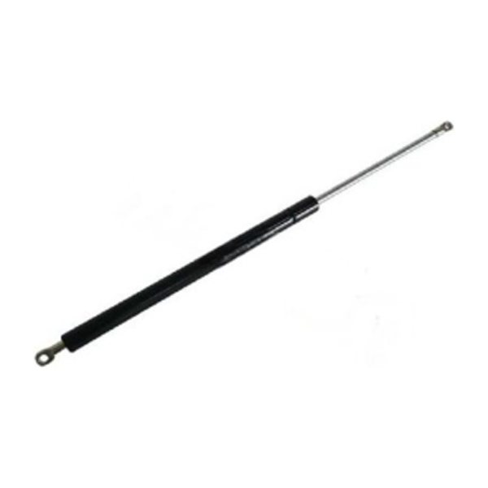

Parts › Cab, Seat Parts & Comfort › 20642-402

Available
Email for a quote
TCM 20642-402 Gas Spring
| OEM part number | 20642-402 |
| Fits | TCM |
| Models / notes | FD60Z8-FD100Z8 1F6F60/70/80/100U |
| Category | Cab, Seat Parts & Comfort |
| Type | Aftermarket replacement |
Send us the quantity you need and we'll reply with pricing, usually within 24 hours. Not the exact part? We can source it. Send the part number or a photo.